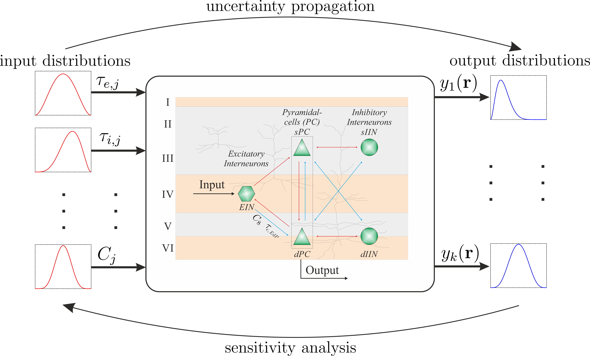

Note
Click here to download the full example code
Introduction to uncertainty analysis#
Typically, we have some model, which depends on parameters, e.g., \(\tau_{e,i}, \tau_{e,i}, ..., C_i\) and we are interested in several quantities of interest (QOI), e.g., \(y_j\), we can compute, when we run the model with the desired set of parameters.
{kind=link}
Uncertainty analysis using Monte Carlo methods#
In order to determine the statistical information of the output quantities of a system, such as the mean or the variance, one of the most common methods is Monte Carlo sampling (MC). The MC method is based on repetitive calculations of the forward model, while defining the random inputs according to their probability distributions. This results in an ensemble of solutions from which statistical properties can be derived. However, a large number of simulations is needed due to the slow convergence rate of the MC method. The mean for example converges with \(1/\sqrt{N}\), where $N$ is the number of deterministic forward calculations. This limits the applicability to problems with low computational cost.
Hence, the whole UQ problem reduces to find the unknown transfer function (grey box) from which we can infer all necessary information (statistics, sensitivities, etc)
Example#
Three-dimensional test function of Ishigami.
The Ishigami function of Ishigami & Homma (1990) is used as an example for uncertainty and sensitivity analysis methods, because it exhibits strong nonlinearity and nonmonotonicity. It also has a peculiar dependence on \(x_3\), as described by Sobol and Levitan (1999). The values of a and b used by Crestaux et al. (2007) and Marrel et al. (2009) are: a = 7 and b = 0.1.
import pygpc
import numpy as np
import matplotlib.pyplot as plt
from mpl_toolkits.mplot3d import Axes3D
# Parameters
p = dict()
p["x1"] = (np.random.rand(int(1e5))-0.5)*2*np.pi
p["x2"] = (np.random.rand(int(1e5))-0.5)*2*np.pi
p["x3"] = np.zeros(p["x1"].shape)
p["a"] = 7
p["b"] = 0.1
# Model
model = pygpc.testfunctions.Ishigami().set_parameters(p)
# Run simulations
y = model.simulate()
# Plot results
fig = plt.figure(figsize=[15, 4])
N = np.logspace(1, 5, 5).astype(int)
mean = []
std = []
for i in range(len(N)):
mean.append(np.mean(y[:N[i]]))
std.append(np.std(y[:N[i]]))
ax1 = fig.add_subplot(131, projection='3d')
ax1.scatter(p["x1"][:N[-1]],
p["x2"][:N[-1]],
y[:N[-1]],
s=4, c=y[0:N[-1]].flatten(), cmap="jet")
ax1.set_xlabel("x1")
ax1.set_ylabel("x2")
ax1.set_zlabel("y")
ax1.view_init(elev=45, azim=180)
ax2 = fig.add_subplot(132)
ax2.plot(N, mean)
ax2.set_xscale("log")
ax2.grid(True)
ax2.set_xlabel("N")
ax2.set_ylabel("Mean")
ax3 = fig.add_subplot(133)
ax3.plot(N, std)
ax3.set_xscale("log")
ax3.grid(True)
ax3.set_xlabel("N")
_ = ax3.set_ylabel("STD")

It can be clearly seen that the mean and the standard deviation converge slowly with increasing \(N\), demonstrating the bad convergence properties of standard Monte Carlo approaches.
References#
Total running time of the script: ( 0 minutes 1.625 seconds)